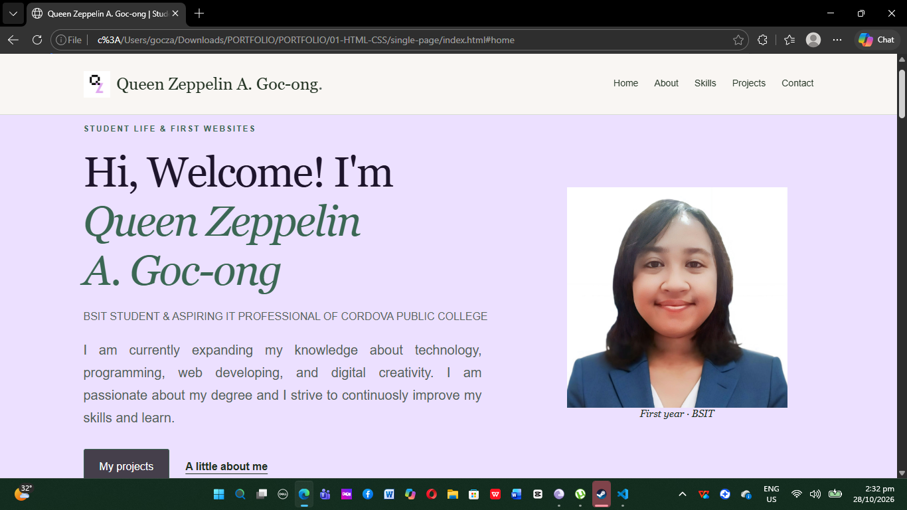
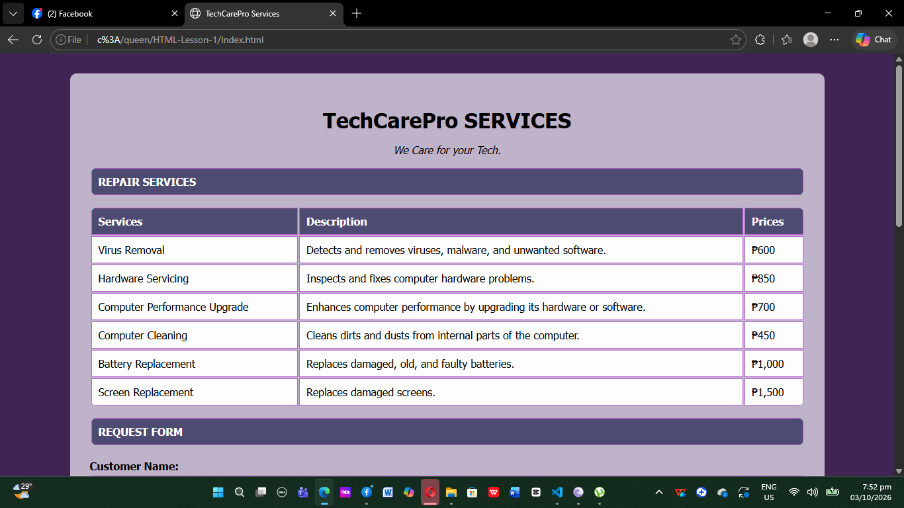
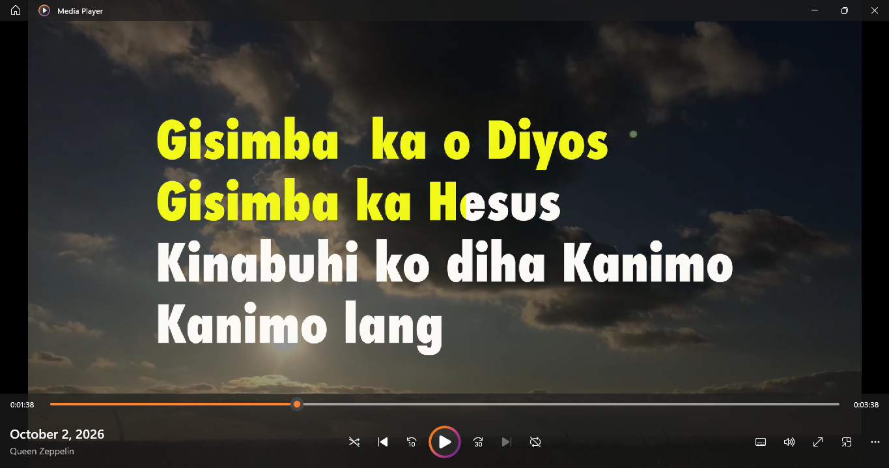

HTML5
I am able to organize a page with headings, paragraphs, links, images, lists, and tables. I’m practicing on making a simple website with a clear structure.
Student life & first websites
BSIT STUDENT & ASPIRING IT PROFESSIONAL OF CORDOVA PUBLIC COLLEGE
I am currently expanding my knowledge about technology, programming, web developing, and digital creativity. I am passionate about my degree and I strive to continuosly improve my skills and learn.
StudyingBS Information Technology
PracticingHTML, CSS, Programming & simple layouts
After classSinging, sketches, reading & training
01 / About me
I am a 1st year Bachelor of Science in Information Technology student currently studying at Cordova Public College. I have been computer literate since I was in high school which made me interested in technology and how it works. Making websites and learning programming is a new experience for me, but I am determined to learn and improve my skills in this field.
Working with my fellow IT students helped me discover new learnings in this degree. I believe that commitment, hard work, and faith can help me to achieve my goal in becoming an IT professional. I have experienced various things with my journey and through these experiences I learned that nothing is easy, but that does not mean that nothing is possible.
I read comics, draw sketches, and sing. I also enjoy spending quality time with my family and friends. Practicing my skills in piano is also one of my hobbies. I like to explore new things like arts and crafts, it really helps me to be creative and imaginative. I also like to watch movies and series alone or with my loved ones. Playing online games is one of my favorite pastimes, especially when I am with my friends. Sudoku is also my favorite logic game, it helps me to think and analyze things.
02 / Skills
I am able to organize a page with headings, paragraphs, links, images, lists, and tables. I’m practicing on making a simple website with a clear structure.
I can style a page with colors, fonts, spacing, flexbox, and borders. I’m learning to use classes and IDs to apply styles to the right elements.
I am able to write simple programs using variables, conditions, functions and loops. I start with small exercises and trace the steps on paper. I also use algorithms and flowcharts to plan my code.
I write code in VS Code and Devc++, organize files into folders, and use Google Drive to back up my work. In mobile, I use Cxxdroid for c programming and Jvdroid for Java programming since I experienced it before.
I can create documents, spreadsheets, and presentations using Microsoft Office, Google Workspace, and Canva. I am also able to collaborate with others easily and efficiently using these tools.
I can edit videos using apps like Capcut and Adobe Premiere Pro. I am able to add transitions, effects, music, and texts to my videos. I also know how to trim and organize my clips.
I can create simple animations using tools like Adobe Animate and FlipaClip. I understand the principles of animation and I have basic knowledge on how to do them. I also learned the production process of animation like storyboarding, making character models, and more.
I have the ability to think creatively and come up with solutions to problems. I am also able to adapt to new situations and challenges.
03 / Projects

01 / HTML & CSS · Individual activity
My first website portfolio that introduces myself, my skills, and my projects. Through this, I learned how to use HTML and CSS to create a simple layout with text, images, video, and links.
View image preview
02 / HTML table and form · Individual Activity
A table about technical services with a service request form. I used HTML for the table and form, and CSS for the design. This is where I learned how to make tables and use inputs, choices, and buttons. More pictures of my forms are in the links below.
View image 1 View image 2 View image 304 / Animation · Studio Project
An animated project showcasing the history of Cebu. I helped the team as a clean-up artist and colorist. Here, I learned the principles and production process of animation. I also learned how to use Adobe Animate and CLip Studio. THis helped me improve my skills in drawing.

04 / Video Editing · Karaoke Video
In this project, I created a karaoke video using Adobe Premiere Pro. The color actually fills with each line in the song. I learned how to use Adobe Premiere Pro and enhance my creativity.
04 / Contact
Share your thoughts
We can talk about a class activities, lessons, and share notes. We can also discuss new and unfamiliar topics. I am open to learning new things and listening to your ideas. Being able to share our thoughts and experiences can help us to improve and grow together.
I usually check my inbox and social media accounts every day. I will respond as soon as I can.
I am also open to collaborating on small projects, sharing resources, and helping each other in learning and improving. For more inquiries, feel free to reach me out through my social media account, contact number, and Gmail account listed at the side.
QueenZeppelin Goc-ong
Number
09531094269
Location
Lapu-Lapu City, Cebu, Philippines
First year, BS Information Technology
Cordova Public College